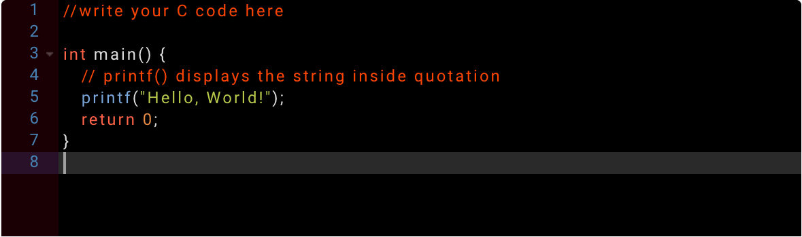
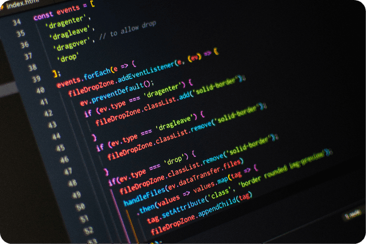
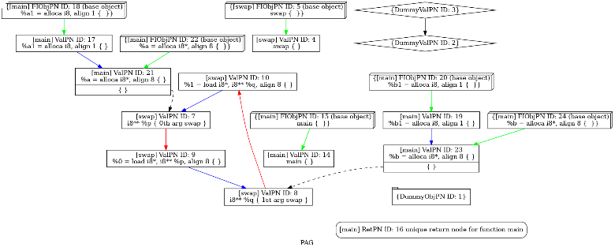

Source Code Analysis Online
Online learning and teaching platform for LLVM code. Powered by SVF-Tools to perform pointer alias analysis, memory SSA form construction, value-flow tracking and memory error checking.

Modern software repositories are very huge.
Understanding the source code of a project
requires extensive efforts, especially for legacy code bases.


This project aims to design a visualising framework to extract the code information (e.g., functions, statements and variables) and build their relations (e.g., control-flow and data-flow dependencies).